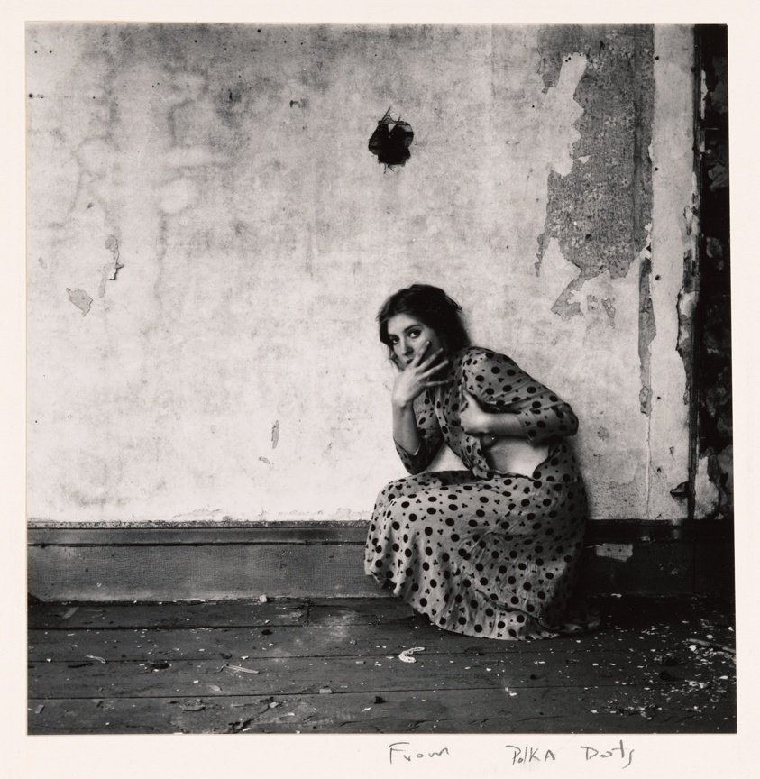

From Polka Dots (Polka Dots Series)
Francesca Woodman · 1976 · Gelatin silver print · 13.2 × 13.2 cm (image) · Art Institute of Chicago
In copyright. Look and learn: shown for study, not for download.
Francesca Woodman was seventeen or eighteen and in her first years at the Rhode Island School of Design in Providence when she made this picture. She had taken her first self-portrait at thirteen and went on photographing herself for the rest of her life. The print is 13.2 centimetres square. It stayed with her estate after her death in 1981 and was sold to the Art Institute of Chicago in 2025.